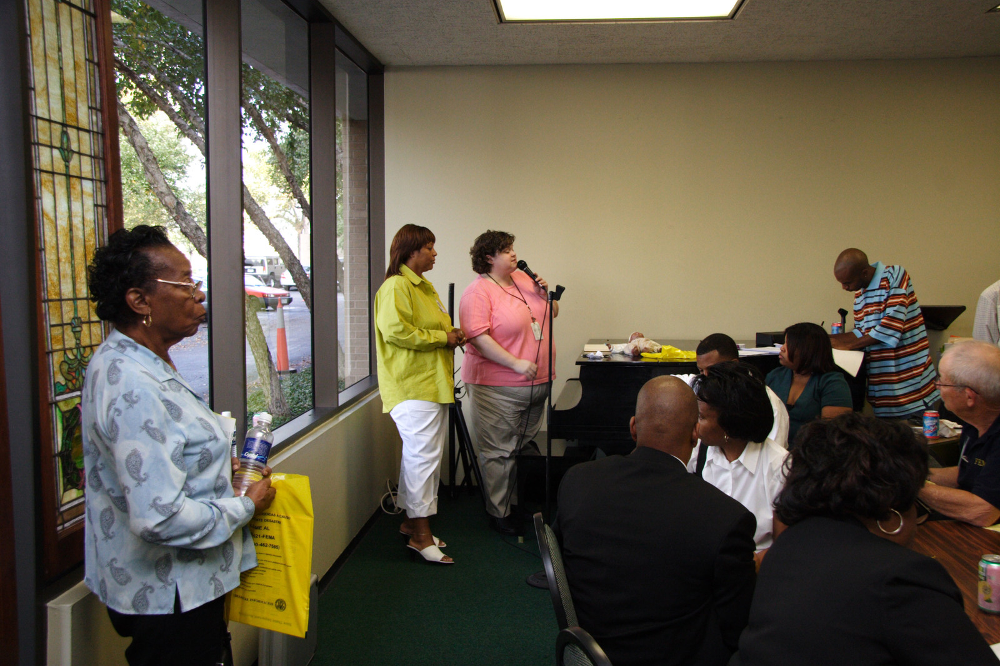
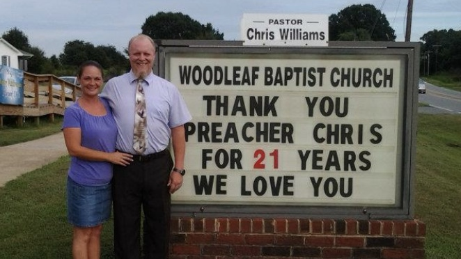

Woodleaf Baptist Church
Home
About Us
Our History
Statement of Faith
Our Church Positions
Worship With Us
Our Services
Church Family
Jesus Squad
Ministries
Our Church Family
 
Woodleaf Baptist Church
7790 Woodleaf Rd
Woodleaf, North Carolina 27054
Connect with us on Facebook at
Woodleaf Baptist Church
Contact Pastor Chris Williams
Phone: 704-278-1336
Email